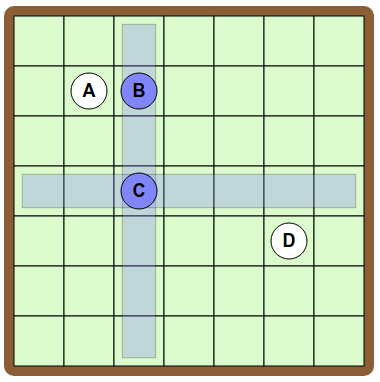

Ratkaisu
A:n ja B:n välillä on yhteys, joten aloitetaan asettamalla ne vaikkapa vierekkäin.

B:n ja C:n välillä on yhteys, joten C pitää laittaa B:n kanssa samalle riville tai sarakkeeseen. Jos laittaisimme C:n samalle riville, syntyisi yhteys myös A:n ja C:n välille. Tämä ei vastaisi tavoitetta.

Asetamme siis C:n samaan sarakkeeseen kuin B, esimerkiksi seuraavasti:

Vain D on jäljellä. Sillä on yhteys vain C:n kanssa, joten D pitää asettaa samalle riville tai sarakkeeseen kuin C olematta kuitenkaan samalla rivillä tai sarakkeessa kuin A tai B. Sama sarake ei käy, koska B on siinä. Samalla rivillä käy kaikki muut ruudut paitsi se, joka olisi samassa sarakkeessa A:n kanssa. Tässä on esitetty yksi ratkaisu:

Alla on vielä esimerkin vuoksi toinen hieman erilainen ratkaisu. Tehtävään on monia erilaisia ratkaisuvaihtoehtoja.

A, B ja C ovat yhteyksissä toisiinsa. Aloitetaan luomalla nämä yhteydet asettamalle ne vierekkäin.

D on yhteydessä edellisistä kolmesta vain B:n kanssa. Luodaan tämä yhteys asettamalla D samaan sarakkeeseen kuin B.

E on yhteydessä sekä C:n että D:n kanssa (ja vain niiden), joten asetetaan E samalle riville kuin D ja samaan sarakkeeseen kuin C. Ratkaisu on valmis.

Yksi toimivaksi osoittautuva lähestymistapa on aloittaa keskittymällä tavoitteessa oleviin "kolmioihin" eli sellaisiin kolmen pelinappuloiden ryhmiin, joissa kaikkien välillä on keskinäiset yhteydet. Kunkin tällaisen kolmen nappulan ryhmän kolmen nappulan on oltava keskenään samalla rivillä tai keskenään samassa sarakkeessa.
Aloitetaan asettamalla kolmion A-D-G nappulat vierekkäin, ja lisätään sen jälkeen kolmion D-C-F nappulat C ja F samaan sarakkeeseen kuin D.

Kolmion H-C-E puuttuvat nappulat H ja E pitää yhdistää C:n kanssa. Asetetaan ne samalle riville kuin C mutta menemättä samaan sarakkeeseen kuin muut toistaiseksi asetetut nappulat.

Enää puutuu nappula B, jolla pitää olla yhteys vain E:n ja F:n kanssa. Asetetaan B samalle riville kuin F ja samaan sarakkeeseen kuin E. Ratkaisu on valmis.

Tämä on tietojenkäsittelyä!
Tehtävä esitteli epäsuorasti tietojenkäsittelyssä yleisesti käytettyä apuvälinettä, graafeja. Graafi koostuu solmuista (tehtävässä pelinappulat) sekä niiden välisiä yhteyksiä kuvaavista kaarista (tehtävässä käytettiin nimitystä "yhteys"). Tehtävässä annettu tavoitekuva vastasi hyvin tyypillistä tapaa piirtää graafi.
Yksi luonteva esimerkki graafien soveltamisesta on erilaiset reitinhakuongelmat. Esim. kaupunkien välisiä, mahdollisesti lentokoneen vaihtoja sisältäviä, lentoyhteyksiä voidaan analysoida graafien avulla: tällöin lentokentät ovat solmuja ja lentokenttien väliset lentoyhteydet ovat kaaria. Myös esim. monenlaisia sosiaalisia verkostoja voisi mallintaa graafilla, jossa ihmiset ovat solmuja ja kaaret kuvaavat ihmisten välisiä suhteita.
Tietojenkäsittelyssä pyritään usein muuntamaan ongelma graafiksi, koska moniin graafimuodossa esitettyihin ongelmiin on olemassa valmiita ja hyvin analysoituja ratkaisualgoritmeja.
Katso lisää esim. https://fi.wikipedia.org/wiki/Graafi ja https://fi.wikipedia.org/wiki/Verkkoteoria.